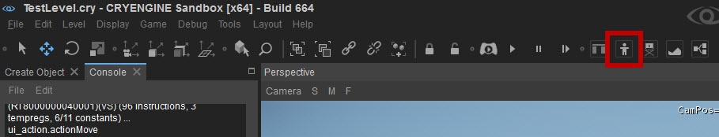
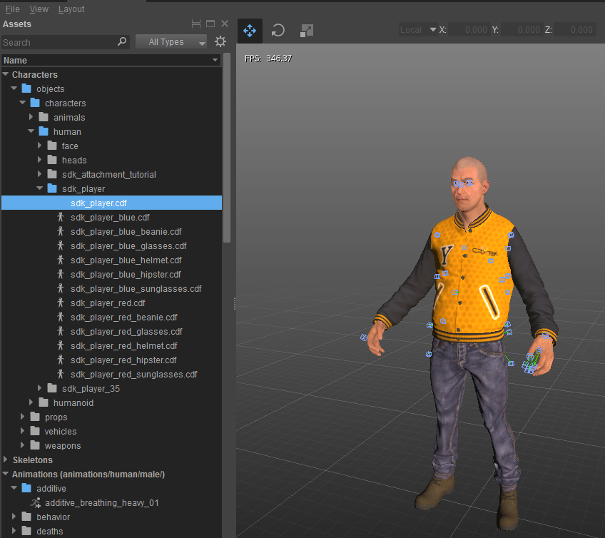
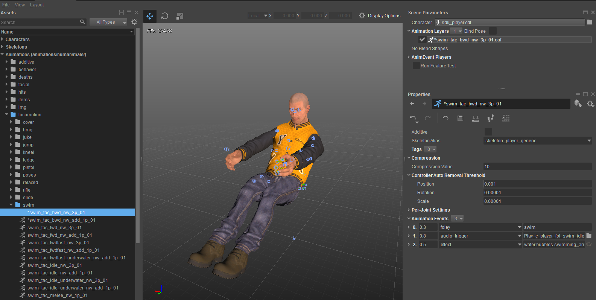
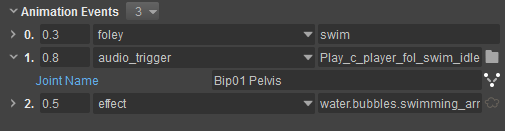

Overview
Using the Character Tool you can precisely time sounds within an animation by creating Animation Events on a timeline.
With this functionality you can trigger different audio system Controls as well as specific Foley and Footstep events which allow sound to be altered on the basis of a character or surface type and while using the same animation.
Applying Audio to Characters Using the Character Tool
The Character Tool can be opened by going to Tools -> Animation -> Character Tool, or by clicking the Animation Layout button in the main toolbar:

For an overview of the Interface in the Character Tool please refer to Character Tool.
In order to setup an audio system Trigger in the Character Tool, you first have to load a character. This can be done through the Assets Pane located on the left side of the tool:

Next, in the lower half of the Asset Pane all the animations used by the character can be seen, to load one just double-click on it:

With the respective Animation loaded we can set our Animation Events in order to execute audio Triggers at certain points on the timeline.
- The Play button cycles the animation allowing you to choose the moment at which you would like a particular Animation Event to play.
- Move the slider to that time position. For fine tuning, use Shift and Ctrl.
- For zooming the timeline, hold Ctrl and scroll with the mouse-wheel.
- By double-clicking in the timeline a new Animation Event is created.
You can specify Animation Events to use special Footstep or Foley events, this is further described in Audio & Foley/Footsteps.
Further details about the Setup of Animation Events can be found in Character Tool.
Once you have setup your Animation Events you can play the Animation to audition the sound setup.
- The timing can now be adjusted by clicking the Animation Event and moving it on the timeline or by adjusting the value in the Animation Events list.
- The precise position of the sound can be achieved by attaching the sound to a particular bone in the object. Click in the Bone column in the Animation Events list - a pop-up window will open where it is possible to select a bone.

If you are having problems with audio playing from audio_trigger Animation Events, try setting the CVar ca_SkeletonEffectsPlayAudioInEngine to anything other than 0. This will enable audio_trigger Animation Events to be handled by the Engine.
- Note that in CE 5.6, Animation Events are generally expected to be handled by the game logic, therefore the purpose of this CVar is to act as a temporary helper used for prototyping.
- This feature comes with some limitations; most notably, once an audio trigger is spawned it stays in place instead of following the character/joint over the duration of the sound.
- This CVar is deprecated and will be replaced by a robust audio handling component in the upcoming engine release.
Results
You now have learned how to setup Audio in the Character Tool. Using this method sounds can be placed on humans, moving parts, prefabs, or weapon reloads.
In order to setup character and material based Footsteps and Foleys please refer to Audio & Foley/Footsteps.